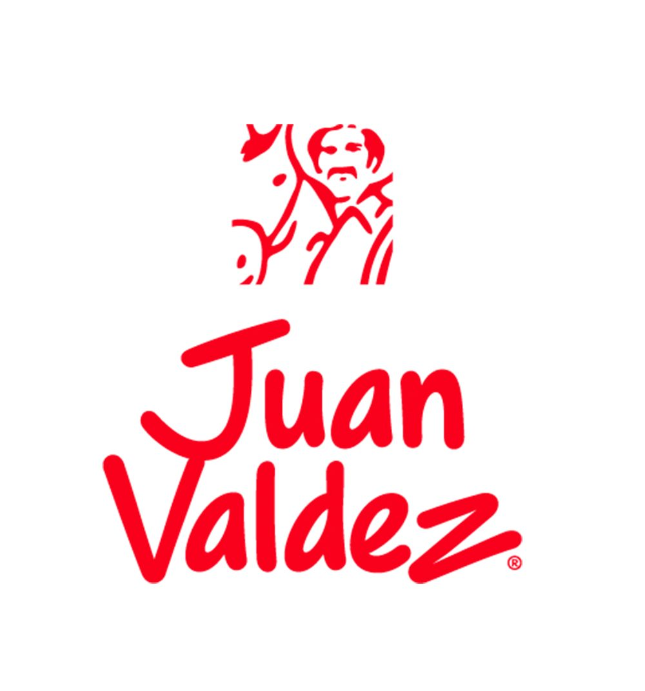

01. Juan Valdez
"Café de Colombia"
LA ESTRATEGIA
En publicidad, un nombre puede ser un "recipiente vacío", pero la meta es llenarlo de alma. Juan Valdez utiliza la formación de Nombres de Personas (como los casos de "Don Carlos" o "Don Simón" que vemos en clase) para que la marca deje de ser una fría corporación y se convierta en alguien de confianza.
EL "DETRÁS DE CÁMARAS"
Aquí aplicamos la Función Connotadora. ¿Qué significa esto? Que la marca toma un nombre común y lo empieza a cargar de "significados añadidos". Ya no es solo un logo; el nombre "Juan" se llena de atributos como la honestidad, el trabajo duro y la sabiduría del campo.
EL RESULTADO
Se genera una Proximidad total con el consumidor. No sientes que le compras a una multinacional, sino a ese "Don Juan" que seleccionó los granos para ti. Es una Función Representativa perfecta: te da la información objetiva de que es café colombiano, pero con la cercanía de un vecino.